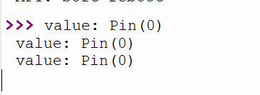

<!DOCTYPE lake>
<a class="yuque-card-link" href="https://player.bilibili.com/player.html?bvid=BV1choKYKEb4&amp;p=4&amp;page=4&amp;autoplay=0" rel="noopener noreferrer" target="_blank">thirdparty：thirdparty</a><p data-lake-id="u69a4f957" id="u69a4f957"><span data-lake-id="ue3f99100" id="ue3f99100">想象一下，你在教室里上课，老师正在讲课。突然，有一个同学举手问问题。这个举手就像一个“外部中断”。老师看到这个同学举手，就暂停讲课，去回答他的提问。这就是外部中断的工作原理。</span></p><p data-lake-id="u99f25217" id="u99f25217"><span data-lake-id="ud7cba9ed" id="ud7cba9ed">​</span><br/></p><p data-lake-id="u7c21f8fe" id="u7c21f8fe"><span data-lake-id="u95814618" id="u95814618">在电子设备中，老师就像是高速运转的MCU, 外部中断就像那个举手的同学。当有特定事件发生，比如按下一个按钮，设备就会停止正在做的事情，去处理这个按钮按下的事件。比如，按下按钮时，设备可以亮起一个灯。</span></p><p data-lake-id="u99f8bdda" id="u99f8bdda"><span data-lake-id="u9442509f" id="u9442509f">​</span><br/></p><p data-lake-id="u9c5e3df3" id="u9c5e3df3"><span data-lake-id="u89ec9ace" id="u89ec9ace">这样，设备可以在需要的时候快速响应，不用一直等着完成其他任务. 就好比老师的主线任务是讲课, 他在第一时间响应了举手问问题的同学.</span></p><p data-lake-id="u401813cf" id="u401813cf"><br/></p><p data-lake-id="u73a746c8" id="u73a746c8" style="text-align: center"></p><p data-lake-id="u615f1ba3" id="u615f1ba3" style="text-align: left"><span data-lake-id="ubda70790" id="ubda70790">从上述原理图我们可以看出，默认状态下GPIO0的电平状态是高电平，当按键按下的时候，由高电平变为低电平有下降沿产生，我们只需要用外部中断就可以捕获这个信息</span></p><p data-lake-id="u08dd53f3" id="u08dd53f3" style="text-align: left"><span data-lake-id="u4ffa2e6b" id="u4ffa2e6b">​</span><br/></p><span class="yuque-card-unsupported">[codeblock]</span><h2 data-lake-id="R5Xc8" id="R5Xc8"><span data-lake-id="u2629b06e" id="u2629b06e">按键打印日志</span></h2><ol list="uf6ecbf77"><li data-lake-id="u4de4a5b1" fid="u4dc8359d" id="u4de4a5b1"><span data-lake-id="u3f312e15" id="u3f312e15">导包</span></li></ol><span class="yuque-card-unsupported">[codeblock]</span><ol list="uf6ecbf77" start="2"><li data-lake-id="u731ad50a" fid="u4dc8359d" id="u731ad50a"><span data-lake-id="ub7920746" id="ub7920746">初始化引脚</span></li></ol><span class="yuque-card-unsupported">[codeblock]</span><ol list="uf6ecbf77" start="3"><li data-lake-id="uc79dae76" fid="u4dc8359d" id="uc79dae76"><span data-lake-id="u492bc32f" id="u492bc32f">编写中断逻辑</span></li></ol><span class="yuque-card-unsupported">[codeblock]</span><p data-lake-id="u02006fed" id="u02006fed"><br/></p><h3 data-lake-id="gHe9e" id="gHe9e"><span data-lake-id="ue4bca8ea" id="ue4bca8ea">按键点灯</span></h3><ol list="uf5c1fbac"><li data-lake-id="u3b90951f" fid="ue50a0811" id="u3b90951f"><span data-lake-id="ud94b4f44" id="ud94b4f44">导包</span></li></ol><span class="yuque-card-unsupported">[codeblock]</span><ol list="uf5c1fbac" start="2"><li data-lake-id="u5b6fa099" fid="ue50a0811" id="u5b6fa099"><span data-lake-id="u300fb03b" id="u300fb03b">初始化引脚</span></li></ol><span class="yuque-card-unsupported">[codeblock]</span><ol list="uf5c1fbac" start="3"><li data-lake-id="u31b3aaba" fid="ue50a0811" id="u31b3aaba"><span data-lake-id="ud80e6f73" id="ud80e6f73">编写核心逻辑</span></li></ol><span class="yuque-card-unsupported">[codeblock]</span><p data-lake-id="u12f82cca" id="u12f82cca"><span data-lake-id="u97e08ea2" id="u97e08ea2">按下按键，灯的状态发生变化</span></p><p data-lake-id="ucf659b2e" id="ucf659b2e"></p>